Time Series, in Context
Most generative AI research targets text, images, audio, and video, while the bulk of enterprise data is stored as tables and time series. However, such structured data do not make sense in isolation. We argue that a time series or a table should always be modeled together with its context: metadata, hard constraints, and text, such as news in finance or medical reports in healthcare. This post summarizes three of our papers built on this idea: Time Weaver and Constrained Posterior Sampling for generation, and Context as Covariates for forecasting.
Why is generative AI for time series hard?
The world focuses on language, image, audio, and video models, modalities that humans are very familiar with. However, the bulk of enterprise data is stored in structured formats such as tables and multivariate, multimodal time series. Despite this, progress in generative modeling for time series has been slow for three reasons.
Continuous, high-dimensional data
LLMs operate on discrete tokens. Time series are continuous-valued, often have many channels, and vary in length and sampling rate.
Lack of positive transfer
Pretraining on diverse text helps on new tasks. In time series, training on one domain, such as ECG, gives little benefit on another, such as oil prices.
Extremely diverse context
The context that influences a time series comes in many modalities: categories, numbers, other time series, hard rules, and free text.
Context determines how a time series evolves
We therefore need to approach generative modeling for time series from a different perspective. Consider the following tasks:
- Synthesize an ECG pattern for a 60-year-old smoker with a pacemaker.
- Predict Tesla's stock price based on the latest flying car demo.
- Forecast network congestion in Manhattan on New Year's Eve if 1% of cell towers are down during peak hours.
- Synthesize PPG signals for patients running on treadmills with different weights and skin types.
In each case, the context, not the statistics or the past values of a time series alone, determines how the time series evolves.
We build on this observation in two streams of research: context-aware generation and context-aware forecasting. To this end, we published three research works in these two streams.
Three papers, published at ICML and NeurIPS
* Equal contribution.
Context-aware generation
Synthetic time series are used to anonymize private data, stress-test systems, ask what-if questions, and augment imbalanced datasets. For these uses, a sample has to match a specific scenario, not just look like the training data on average.
Time Weaver
ICML 2024 · Spotlight- Generate an electricity demand pattern for a household in Austin, given the weather forecast for July.
- Existing generators ignore the paired metadata, so they cannot generate samples for a specific condition.
- Metadata mixes categorical (location), continuous (latitude), and time-varying (weather forecast) variables. Image and audio generators, in contrast, are usually conditioned on static text prompts.
- Time series are hard to judge visually, and standard image metrics ignore the metadata entirely.
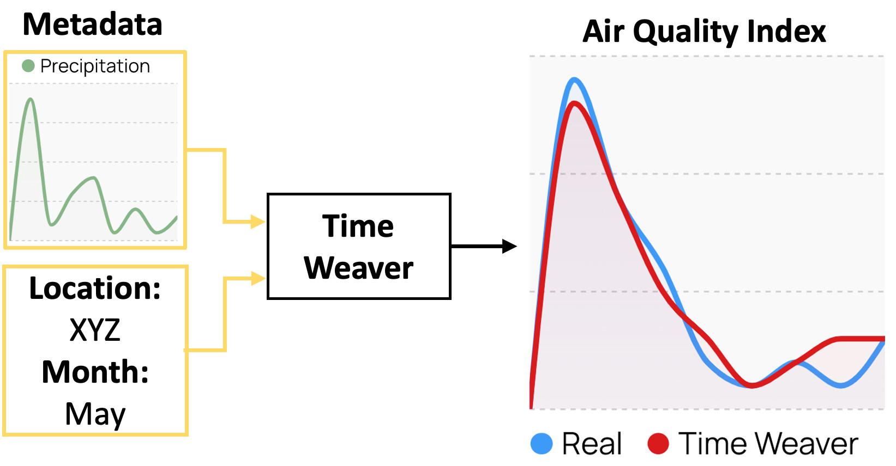
Background: Diffusion Models
Time Weaver follows the diffusion modeling paradigm. A diffusion model learns the distribution of the training data so that it can generate new samples from that distribution. It has two processes:
- Forward process (noising). Take a real time series x0 and add a small amount of Gaussian noise at each of T steps. After enough steps, xT is pure Gaussian noise (a standard normal, 𝒩(0, I)). This process is fixed and has nothing to learn.
- Reverse process (denoising). A neural network, the denoiser, learns to undo one step: given a noisy series xt and the step t, it predicts the noise that was added. It is trained on many real series at every noise level.
This training objective is a simplified form of maximizing the likelihood of the training data, which is how the denoiser learns the data distribution. To generate a new series, we start from pure noise and apply the denoiser T times, removing a little noise at each step.
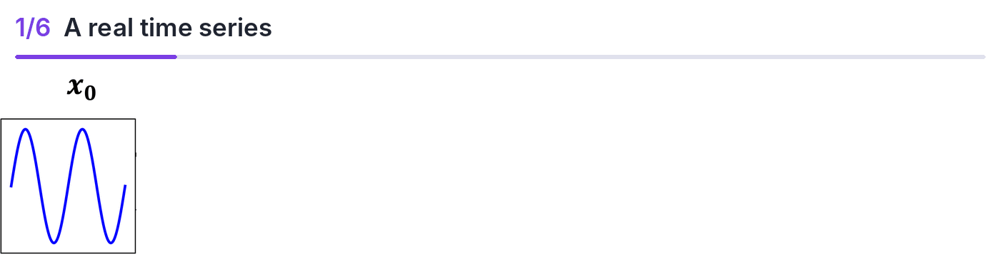
Our Approach
Time Weaver adds the metadata to the reverse process. Categorical and continuous metadata go through separate tokenizers, are concatenated, and are combined with self-attention into one embedding, z. The denoiser receives z at every step, so each denoising step is guided by the metadata. At test time, Time Weaver generates samples for metadata conditions that were not seen during training.
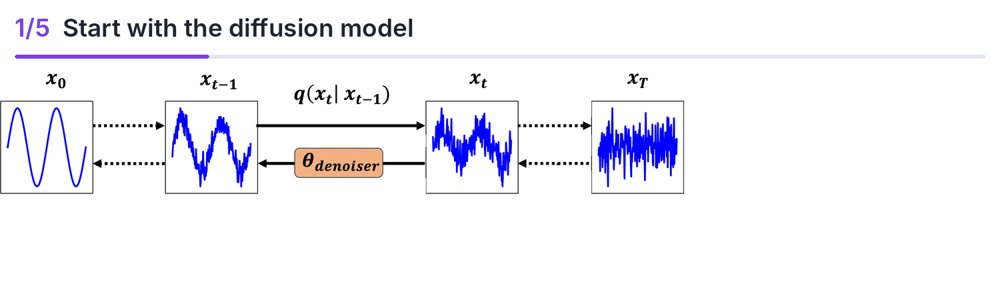
But how do we evaluate the usefulness of the generated time series?
The Fréchet Inception Distance (FID), the standard metric for image generation, only compares the distributions of real and generated samples. A generator that swaps the conditions, producing ventricular fibrillation when asked for a normal ECG and vice versa, gets the same score as a correct one. FID does not check whether a sample matches its metadata. Moreover, context can be very complex, with discrete, continuous, and even textual conditions, in which case image metrics do not scale.
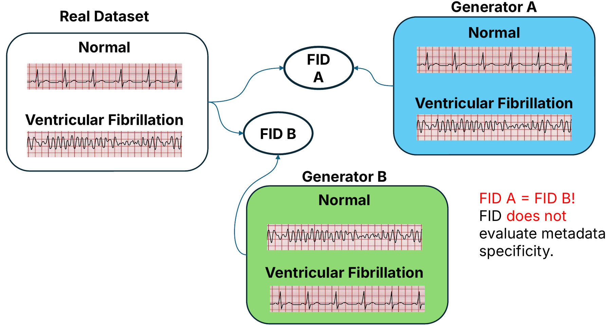
Our Metric: Joint Fréchet Time Series Distance (J-FTSD)
J-FTSD works like FID, but it compares real and synthesized data in a joint space of time series and metadata. It is computed in two steps.
Step 1: Learn a joint embedding space for time series and metadata. We train two encoders together, a time series encoder and a metadata encoder, on aligned patches of the same time window. Within a batch, each time series patch should be most similar to its own metadata patch (the diagonal of the similarity matrix) and less similar to all other metadata patches. This is the same training objective that CLIP uses for images and text.
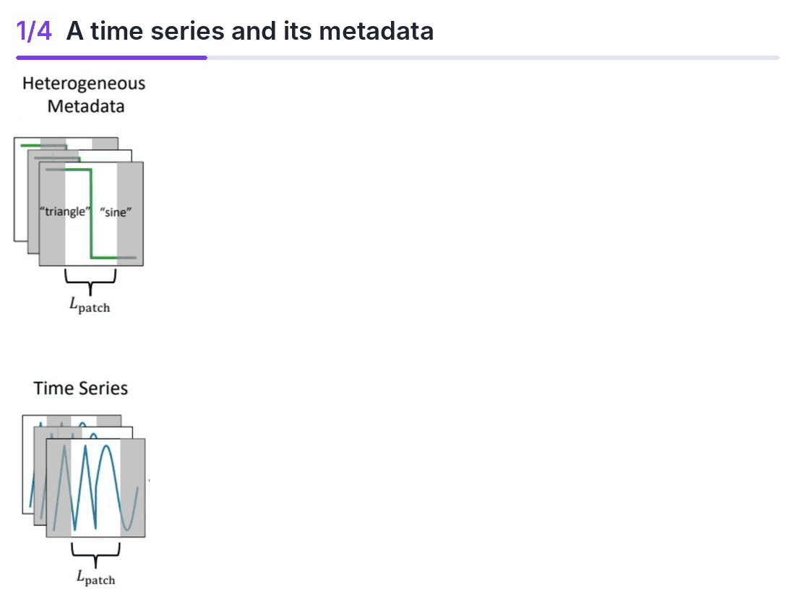
Step 2: Compare real and synthesized data in this space. We embed the real time series, the synthesized time series, and their shared metadata, and concatenate each time series embedding with its metadata embedding. We then fit a Gaussian to the real set and to the synthesized set, and compute the Fréchet distance between the two, as in FID. Lower is better.
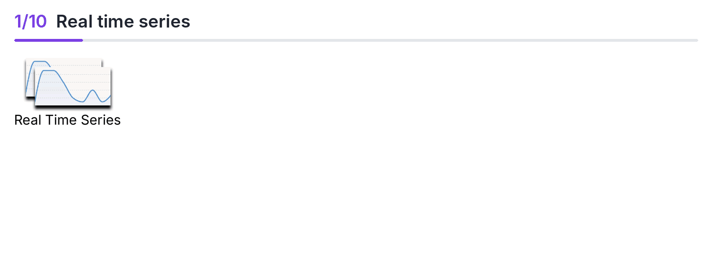
Because the encoders are trained to link time series features to metadata, the joint embedding captures how the two are correlated. If a synthesized series lacks the features that its metadata implies, this correlation is lost and J-FTSD increases.
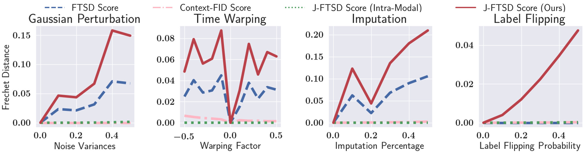
Results
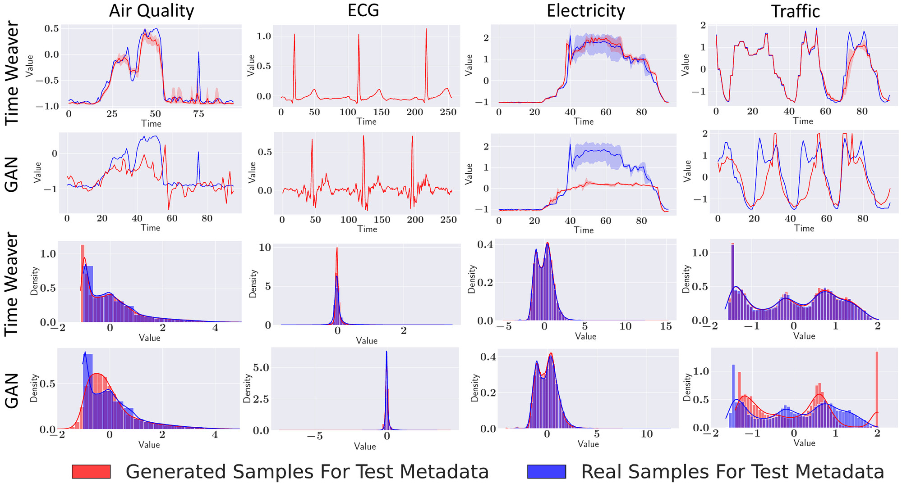
To measure how useful the generated data is, we use Train on Synthetic, Test on Real (TSTR). For ECG, for example, we train a classifier to predict a patient's heart condition from the ECG using only ECGs generated by Time Weaver, and then test it on real ECGs from the held-out test set. If the synthetic ECGs carry the features of their heart conditions, the classifier performs well on real data. We also report J-FTSD.
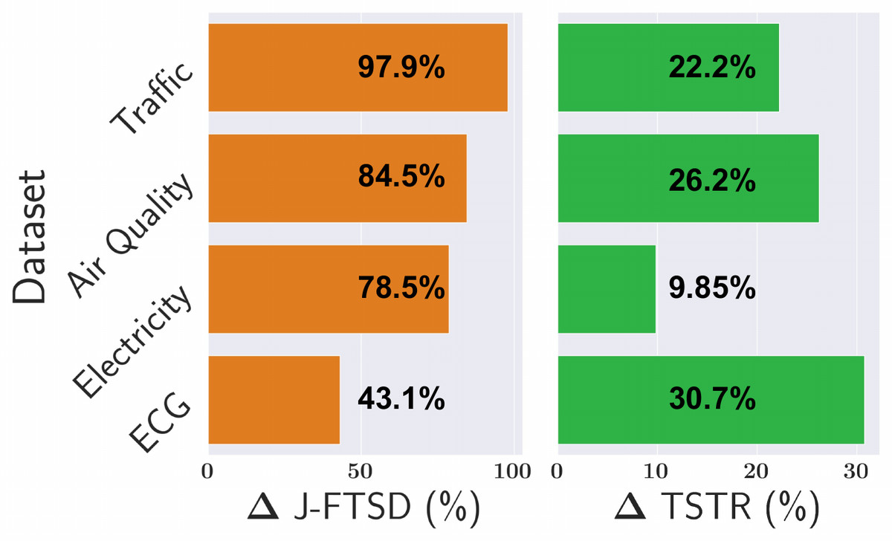
Constrained Posterior Sampling (CPS)
NeurIPS 2025Some context is a hard rule rather than a soft condition. Stock prices, physical systems, and operational limits come with constraints that every sample must satisfy.
- Generate the daily stock prices of company XYZ for September, where the high and low prices bound the opening and closing prices and the average closing price is $35.
- A diffusion model trained only on data does not guarantee hard constraints. It can produce a day where the closing price is above the high.
- Projecting samples onto the constraint set satisfies the rules but can degrade sample quality.
- Prior methods need retraining for each new type of constraint, an extra model to restore realism, or guidance weights that are hard to tune when there are many constraints.
At every denoising step, project the model's estimate of the clean sample onto the constraint set, not the noisy sample itself. The projection is weak in early steps and strict at the final step, and the remaining denoising steps remove the artifacts it introduces. CPS uses a pretrained diffusion model as is, with no retraining and no new hyperparameters.
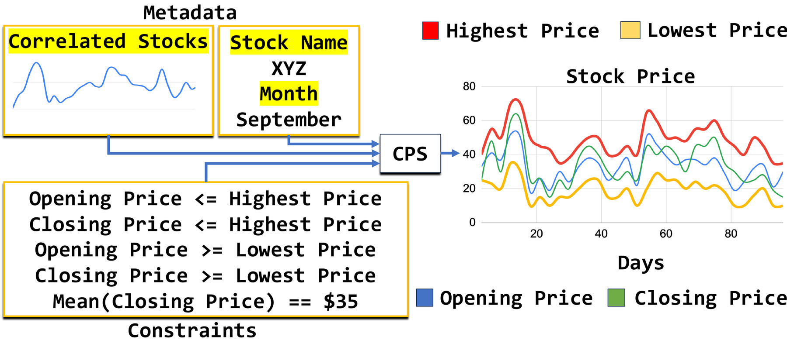
Results
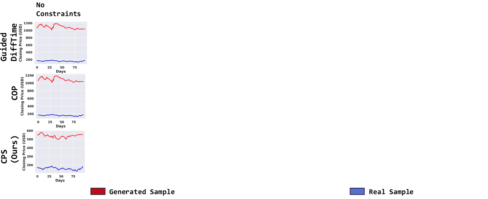
Context-aware forecasting
The same observation applies to forecasting. Here, the context often comes as text: analyst notes and policy announcements move markets, product reviews hint at demand, and weather bulletins precede changes in traffic.
Context as Covariates (CoCo)
NeurIPS 2026- Forecast Apple's stock price if revenue from iPhone sales is 15% higher than the target.
- Forecast crude oil prices given the recent tariffs on OPEC countries.
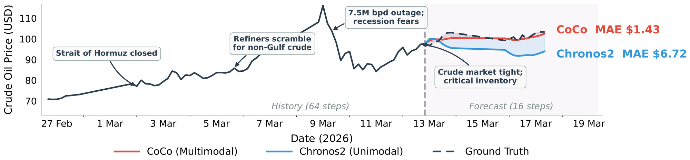
- Time series foundation models (TSFMs), such as Chronos2 and TimesFM, are trained only on numbers. Adding text embeddings to them does not reliably help.
- LLMs understand text but are not numerically precise. Methods that convert the series into tokens and let the LLM forecast do not use the strengths of TSFMs.
- Paired text and time series data is scarce. Multi-domain datasets have only a few thousand aligned samples.
| LLM | TSFM | CoCo | |
|---|---|---|---|
| Uses text context | ✓ | ✗ | ✓ |
| Numerically precise | ✗ | ✓ | ✓ |
Let each model do what it is good at. The LLM reads the history and the text and outputs two extra time series: a context-aware forecast, and a per-step confidence computed from the spread of several sampled forecasts. The TSFM takes both as covariates (extra input series, an input format it already supports) and produces the final forecast. The confidence tells it when to rely on the LLM.
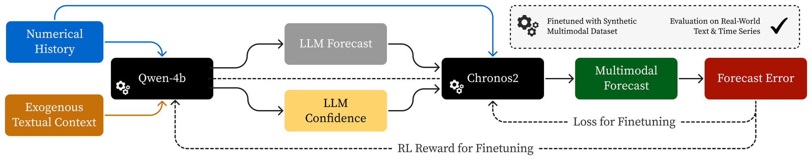
But where is the large-scale paired text and time series data to train on?
To address the data shortage, we used an LLM to annotate about 37,000 real time series (about 12 million time steps) with plausible events and outlooks. Synthetic and real annotations describe the same kinds of patterns, such as an upcoming rise or a slow decline, so models trained on synthetic text also work on real news.
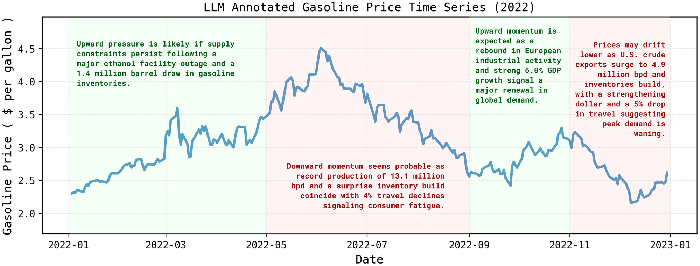
Results
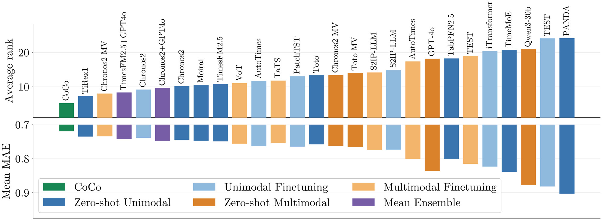
Summary
| Paper | Task | Context | How the context is used |
|---|---|---|---|
| Time Weaver ICML 2024 | Generation | Metadata | Conditions a diffusion model through a metadata encoder |
| CPS NeurIPS 2025 | Generation | Hard constraints | Projects the clean-sample estimate onto the constraints at every denoising step |
| CoCo NeurIPS 2026 | Forecasting | Text | An LLM turns the text into forecast and confidence covariates for a TSFM |
Each type of context needs its own mechanism, but the principle is the same in all three papers: model the time series together with the information that determines how it evolves. The same principle also applies to evaluation, as J-FTSD shows, and to data collection, as the synthetic annotations in CoCo show.
More from our group
Additionally, check out our work on causal discovery (ALICE), on extending Time Weaver's essence to the RF domain (ALF), and on extending our time series CLIP and J-FTSD to radar signals (CPIP).
* Equal contribution.